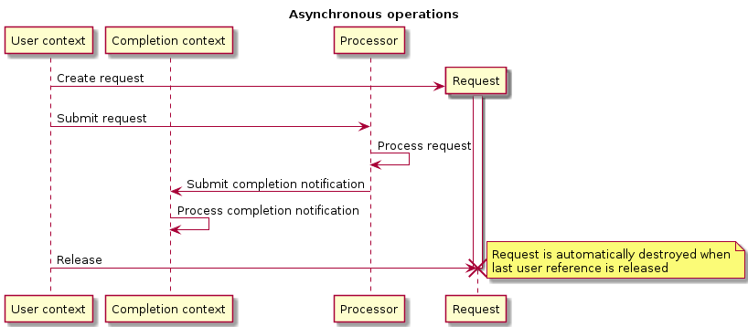

Asynchronous programming framework¶
Since VSM interacts with physical devices (thus doing a lot of various I/O operations), handles communications with other UgCS components (UCS server), asynchronous programming paradigm concept is supported by most of operations implemented in VSMs. It allows convenient creation of event-based applications.
Callbacks¶
Callback is the simplest entity a VSM asynchronous programming framework. All asynchronous handlers are represented as callback objects (ugcs::vsm::Callback). Such an object encapsulates the copy of a callable entity (function pointer, class method pointer, lambda, callable object) and copy of all arguments to it. It is similar to std::bind() but provides additional features, such as possibility to use non-copyable objects as arguments (using move semantic), change stored arguments value. Callback usually created by ugcs::vsm::Make_callback() function.
Let’s say there is a function to be used as callback:
/* Target function for callback. */ int Sample_callback_function(int arg) { LOG("Sample callback function, arg: %d", arg); return arg + 10; }
Note that a function can have a return value or may be returning void, depending on developer needs. Callback object can be created as follows:
auto func_cbk = ugcs::vsm::Make_callback(Sample_callback_function, 10);
It binds value 10 as the argument for the callback. After that callback can be called (invoked, executed):
LOG("Callback call result: %d", func_cbk());
This will output:
2013-10-01 12:54:50.572 - <DEBUG> [async_workflow.cpp:7] Sample callback function, arg: 10
2013-10-01 12:54:50.572 - <DEBUG> [async_workflow.cpp:20] Callback call result: 20
Object method also can be bound as callback. Let’s say there is a class:
class Sample_class { public: int Sample_callback_method(int arg) { LOG("Sample callback method, arg: %d", arg); return arg + 10; } };
Its method can be bound:
Sample_class class_instance; auto method_cbk = ugcs::vsm::Make_callback(&Sample_class::Sample_callback_method, &class_instance, 10); LOG("Callback call result: %d", method_cbk());
Note that the first argument after the method pointer should be a pointer to the class instance to bound the callback to. It may be a plain C++ pointer or any smart pointer (it should have pointer semantic dereferencing operator defined). The output:
2013-10-01 13:48:15.843 - <DEBUG> [async_workflow.cpp:19] Sample callback method, arg: 10
2013-10-01 13:48:15.843 - <DEBUG> [async_workflow.cpp:45] Callback call result: 20
Another callback target can be callable object i.e. instance of a class which has the function call operator overloaded:
class Callable_class { public: int x; Callable_class(int x): x(x) {} int operator ()(int y) { LOG("Sample callback method, arg: %d", y); return x + y; } };
The callable object instance passed as the first parameter to ugcs::vsm::Make_callback function:
Callable_class callable_instance(10); auto callable_cbk = ugcs::vsm::Make_callback(callable_instance, 10); LOG("Callback call result: %d", callable_cbk());
C++ has built-in callable objects lambda functions which also can be used as callback target:
auto lambda_cbk = ugcs::vsm::Make_callback( [](int arg) { LOG("Sample lambda callback, arg: %d", arg); return arg + 10; }, 10); LOG("Callback call result: %d", lambda_cbk());
In all cases when some callable entity is used to create a callback, developer should ensure that the entity lifetime is not less than the created callback lifetime, otherwise the behavior of the application is not defined (usually crash). If plain pointer to a class instance is passed, make sure it is not deleted before the last callback instance is destroyed. In general usage of plain pointer should be avoided and some kind of smartpointers used instead in order to automatically control objects lifetime.
Enforcing callback prototype¶
In the examples above callbacks are created with arbitrary prototypes. Usually the callback is passed to some API which stores it as a handler of some event. Often the event has some parameters which should be passed to the handler. Also the callback return value may be used for some purpose by the caller. So in this case the API may want to restrict prototypes for passed callbacks - especially to enforce the type of the return value and types for some number of the first mandatory arguments. These first arguments are then provided by the handler caller and may contain event parameters. All the rest arguments are bound to the user provided values as before.
Required callback prototype is specified via ugcs::vsm::Callback_proxy object:
typedef ugcs::vsm::Callback_proxy<int, double> Sample_handler_type;
The first template parameter defines callback return type (which also can be void) and the rest optional arguments are types the first enforced arguments the callback should be able to accept. In this example, the callback should return int and should have the first argument of double type. The rest arguments are defined by the user.
Now Sample_handler_type is the type for callback the API method can accept:
void Some_api_method(Sample_handler_type handler) { LOG("Callback result: %d", handler(20)); }
Note that ugcs::vsm::Make_callback() returns object which type is dependent from user defined arguments. The ugcs::vsm::Callback_proxy class is designed in such a way that it can be created from any callback object which has compatible prototype return value type and types of the specified number of the first arguments.
Now there is an API call which accepts callback with the enforced prototype. Since the enforced arguments occupy the same storage as the arguments specified by the user, some initial values should be provided to ugcs::vsm::Make_callback function. For a user it might be inconvenient to define these initial values because he/she does not know which values are suitable to be initial ones. Instead the API developer should provide a so called builder function which provides suitable initial values for the enforced arguments and hides them from the user. This is done by using DEFINE_CALLBACK_BUILDER macro:
DEFINE_CALLBACK_BUILDER(Sample_handler_builder, (double), (3.14))
It defines the function Sample_handler_builder which returns a callback with one enforced argument of type double and its initial value 3.14.
Now the API user can utilize this builder function to create a callback suitable for passing to the API function:
auto My_callback_target = [](double enforced_arg, int user_arg) { LOG("Callback called, enforced argument %f user argument %d", enforced_arg, user_arg); return 30; }; Some_api_method(Sample_handler_builder(My_callback_target, 10));
Here user provides only a custom argument of type int (10) and the enforced argument of type double is hidden at this moment.
The output is:
2013-10-01 18:26:14.712 - <DEBUG> [async_workflow.cpp:105] Callback called, enforced argument 20.000000 user argument 10
2013-10-01 18:26:14.712 - <DEBUG> [async_workflow.cpp:89] Callback result: 30
Note that initial value of the enforced argument is replaced by a new value (20) at the time of handler invocation in Some_api_method. There is a possibility to preserve the current value of the enforced arguments by using ugcs::vsm::Callback_proxy::Invoke() method. Before that the values can be set any number of times using ugcs::vsm::Callback_proxy::Set_args() and ugcs::vsm::Callback_proxy::Set_arg() methods.
Requests and contexts¶
The plain callbacks described above are just wrappers for user provided entry points. It is not enough for creating asynchronous processing workflow higher level abstractions are needed. Requests and contexts are designed for that purpose.
All potentially blocking operations in VSM SDK are implemented using asynchronous programming pattern. The diagram below illustrates a typical workflow for an asynchronous operation.
{kind=link}
By “context” there is meant an execution context in which the processing or completion notification handler (i.e. callback) is executed. The framework provides ability to run contexts in any threads and time moments. For example, there can be several contexts which can be run explicitly in the current thread by calling ugcs::vsm::Request_waiter::Wait_and_process() method, or have a dedicated thread wrapped in the convenience class ugcs::vsm::Request_worker for running of contexts. Typically request processors (a component or service which processes a user request) has its own execution context usually served in a dedicated thread. Completion context is the one which will handle the request completion notification. In the diagram below user context (i.e. from which the request was initiated) is different from desired completion context. Often the user code may be running in the same context which is provided as completion context for a request. However in some cases it could be desirable to process notification in different context and the SDK provides such ability.
Simple example of the workflow:
/* Create waiter object for our contexts. */ ugcs::vsm::Request_waiter::Ptr waiter = ugcs::vsm::Request_waiter::Create(); /* Create processor for requests. */ ugcs::vsm::Request_processor::Ptr processor = ugcs::vsm::Request_processor::Create("Processor", waiter); /* Create completion context for notifications processing. */ ugcs::vsm::Request_completion_context::Ptr comp_ctx = ugcs::vsm::Request_completion_context::Create("Completion context", waiter);
Instances of processor and completion contexts are created. In this example they will run in one execution context so they will share one ugcs::vsm::Request_waiter object which is responsible for contexts synchronization. Note that the creation is done by static member function Create() and a smart pointer is returned to the user. This is a common approach for the most high-level objects in the SDK. The returned pointer is std::shared_ptr instance so that the object is automatically destroyed when the last reference is released (no more pointer instances existing).
After the instances are created, they should be enabled to be able to accept requests.
processor->Enable(); comp_ctx->Enable();
Now a request can be created:
ugcs::vsm::Request::Ptr req = ugcs::vsm::Request::Create(); req->Set_processing_handler( ugcs::vsm::Make_callback( [](int arg, ugcs::vsm::Request::Ptr req) { LOG("Processing handler called, arg %d", arg); req->Complete(); }, 10, req)); req->Set_completion_handler(comp_ctx, ugcs::vsm::Make_callback( [](int arg) { LOG("Completion notification handler called, arg %d", arg); }, 20));
At least a processing handler should be mandatory assigned to the request. A completion handler is optional if it is not provided the request will be processed and no notification is issued. The request pointer is passed as a processing handler parameter. ugcs::vsm::Request::Complete() method should be called at some point when the request processing is completed. It is not mandatory to call it in the processing handler a particular processor can store it somewhere in its internal structures and complete the request later, e.g. when some I/O operation is completed. Note that the completion context is provided among with a completion callback in ugcs::vsm::Request::Set_completion_handler() method. Context for request processing is depending from the processor the request will be submitted to:
processor->Submit_request(req); LOG("Request submitted");
Now the request is submitted to the processor requests queue. If it would be running in a separate thread, it could be processed in background asynchronously. But in the example there is no processor dedicated thread, so processing should be done explicitly:
LOG("Before processor running"); waiter->Wait_and_process({processor}); LOG("After processor running");
ugcs::vsm::Request_waiter::Wait_and_process() method accepts a list of containers which should be served. It could accept both the processor and completion context here but for illustrative reasons only processor is provided. In the context of this call the processing handler will be called where ugcs::vsm::Request::Complete() method places the request in the completed state into completion context queue. It can be served now:
LOG("Before completion context running"); waiter->Wait_and_process({comp_ctx}); LOG("After completion context running");
The completion handler is called in this context and the request is fully processed after that.
When contexts are not longer needed they should be terminated by ugcs::vsm::Request_container::Disable() method:
processor->Disable(); comp_ctx->Disable();
Many of SDK classes have Enable()/Disable() methods. One could think they are redundant, because class destructors can do the clean up work but it is not true. C++ does not have the garbage collector so even when using smart pointers there could be cyclic references between objects. And when the last external (from developer point of view) reference is released, internal references could still exist and form so called isolation islands preventing destructor calling. In the managed languages like Java and Python the garbage collector runs in the background and detects and destroys such islands. In C++ it is not possible, so developer still needs to keep in mind possible cyclic references and break them manually before reference releasing. One of the most important functions of Disable() methods in the SDK classes is breaking internal cyclic references to avoid memory leaks.
The output of this example:
2013-10-02 13:54:10.618 - <DEBUG> [async_workflow.cpp:148] Request submitted
2013-10-02 13:54:10.618 - <DEBUG> [async_workflow.cpp:152] Before processor running
2013-10-02 13:54:10.618 - <DEBUG> [async_workflow.cpp:135] Processing handler called, arg 10
2013-10-02 13:54:10.618 - <DEBUG> [async_workflow.cpp:154] After processor running
2013-10-02 13:54:10.618 - <DEBUG> [async_workflow.cpp:158] Before completion context running
2013-10-02 13:54:10.618 - <DEBUG> [async_workflow.cpp:142] Completion notification handler called, arg 20
2013-10-02 13:54:10.618 - <DEBUG> [async_workflow.cpp:160] After completion context running
Serving contexts in dedicated threads¶
Previous example can be modified so that processor and completion contexts are served by a separate thread. This is quite typical task so the convenience class exists ugcs::vsm::Request_worker.
/* Demonstrate contexts serving in a separated thread. */ ugcs::vsm::Request_worker::Ptr worker = ugcs::vsm::Request_worker::Create("Another thread", std::initializer_list<ugcs::vsm::Request_container::Ptr>{processor, comp_ctx}); /* Enable all attached containers. */ worker->Enable_containers(); /* Enable the worker. This will launch its thread. */ worker->Enable();
Here a worker object is created and contexts are attached to it.
ugcs::vsm::Request_worker object itself is a completion context and is served similarly as the attached contexts.
After that the attached containers are enabled as well as the worker object itself. When it is done a separate thread is spawned where all the attached containers are served. Request submitted to the processor will be executed in the worker thread.
req = ugcs::vsm::Request::Create(); req->Set_processing_handler( ugcs::vsm::Make_callback( [](int arg, ugcs::vsm::Request::Ptr req) { LOG("Processing handler called, arg %d", arg); req->Complete(); }, 10, req)); req->Set_completion_handler(comp_ctx, ugcs::vsm::Make_callback( [](int arg) { LOG("Completion notification handler called, arg %d", arg); }, 20)); LOG("Before request submission"); processor->Submit_request(req); /* Give a chance to process the request in a parallel thread. */ std::this_thread::sleep_for(std::chrono::seconds(1)); LOG("After request submission"); /* Disable attached containers and the worker itself. */ worker->Disable_containers(); worker->Disable();
The output is:
2013-10-02 14:09:54.690 - <DEBUG> [async_workflow.cpp:193] Before request submission
2013-10-02 14:09:54.690 - <DEBUG> [async_workflow.cpp:184] Processing handler called, arg 10
2013-10-02 14:09:54.690 - <DEBUG> [async_workflow.cpp:191] Completion notification handler called, arg 20
2013-10-02 14:09:55.690 - <DEBUG> [async_workflow.cpp:197] After request submission
As it is seen the both processing and completion handlers were called right after submission. It was done in a separate worker thread.
Creating own processor¶
In the previous example ugcs::vsm::Request_processor class was used to process requests. But actually this class does not provide any useful service. All the processing was done by a processing handler provided by the user. This is not a usual pattern because processors are created for providing some service like I/O with some device or network. So they will have their own processing handlers which do the stuff. Also request creation is the thing the user is not supposed to do. The processor usually provides methods which accept request parameters and a result handler with a completion context. The request creation is done inside the processor. Simplest typical processor declaration looks as follows:
class Sample_processor: public ugcs::vsm::Request_processor { DEFINE_COMMON_CLASS(Sample_processor, ugcs::vsm::Request_processor) public: /* Type for result handler. */ typedef ugcs::vsm::Callback_proxy<void, double> Handler; /* Builder for handler. */ DEFINE_CALLBACK_BUILDER(Make_handler, (double), (3.14)); Sample_processor() : ugcs::vsm::Request_processor("Sample processor") {} /* The method for accessing processor provided services. */ ugcs::vsm::Operation_waiter Sample_api_method(/* Some request parameter. */ int param, /* Result handler. Default one does nothing thus discarding * the result. */ Handler handler = ugcs::vsm::Make_dummy_callback<void, double>(), /* Completion context for result handler invocation. Default * value will use processor context. */ ugcs::vsm::Request_completion_context::Ptr comp_ctx = nullptr); private: /* Default completion context if the caller does not provide own one. */ ugcs::vsm::Request_completion_context::Ptr def_comp_ctx; /* Worker with dedicated thread for this processor. */ ugcs::vsm::Request_worker::Ptr worker; /* Request processing handler. It is always invoked in the processor dedicated thread. */ void Process_api_call(int param, ugcs::vsm::Request::Ptr request, Handler handler); /* Called when the processor is enabled. */ virtual void On_enable() override; /* Called when the processor is enabled. */ virtual void On_disable() override; };
All processors should be derived from ugcs::vsm::Request_processor class. Also the convenience macro DEFINE_COMMON_CLASS is used to create some typical methods (like Create()) and types (like Ptr). This processor service is available via Sample_api_method(). The result is returned via a result handler which may be provided as the method argument. The handler type has the restricted prototype with the corresponding builder method. Member def_comp_ctx is default completion context which is used when the user does not provide one. Also the processor has worker member in order to have its own dedicated thread.
Methods On_enable() and On_disable() are called by the framework when the processor is enabled or disabled. They may be overridden if the custom processor needs to intercept these events. Possible implementation:
void Sample_processor::On_enable() { ugcs::vsm::Request_processor::On_enable(); def_comp_ctx = ugcs::vsm::Request_completion_context::Create("Completion context"); def_comp_ctx->Enable(); worker = ugcs::vsm::Request_worker::Create("Worker", std::initializer_list<ugcs::vsm::Request_container::Ptr>{Shared_from_this(), def_comp_ctx}); worker->Enable(); } void Sample_processor::On_disable() { Set_disabled(); worker->Disable(); def_comp_ctx->Disable(); def_comp_ctx = nullptr; worker = nullptr; }
Worker is created with the processor itself and default completion context attached. Note that the base class methods also should be called.
ugcs::vsm::Operation_waiter Sample_processor::Sample_api_method(int param, Handler handler, ugcs::vsm::Request_completion_context::Ptr comp_ctx) { ugcs::vsm::Request::Ptr req = ugcs::vsm::Request::Create(); req->Set_processing_handler( ugcs::vsm::Make_callback(&Sample_processor::Process_api_call, Shared_from_this(), param, req, handler)); req->Set_completion_handler(comp_ctx ? comp_ctx : def_comp_ctx, handler); Submit_request(req); return req; }
This is a typical implementation of an API call a new request is created and own private method is assigned as a processing handler with all necessary arguments enclosed. Usually a request itself also should be enclosed among with the call parameters. The user provided handler is passed in order to provide ability to set the result there later. An alternative approach may be to create own request type which is derived from ugcs::vsm::Request class and store all parameters there.
Completion handler is the one specified by the user and either default or user specified completion context.
The request is then submitted to the processor itself.
The call returns ugcs::vsm::Operation_waiter object which is user handle for the request. It can be used, for example, to synchronize with the request execution or to cancel it.
Now the request processing method implementation:
void Sample_processor::Process_api_call(int param, ugcs::vsm::Request::Ptr request, Handler handler) { auto lock = request->Lock(); if (!request->Is_processing()) { /* It might be canceled. */ return; } handler.Set_args(param * 2); request->Complete(ugcs::vsm::Request::Status::OK, std::move(lock)); }
It is called in the processor thread and there is no concurrency with other requests all of them are serialized in the processor requests queue. In many cases it significantly simplifies the processor design by eliminating parallel programming problems like locking and any other kind of synchronization in case all the work is done in a processor context which is a single thread.
The lock to the request is acquired since the request state may be changed from some other thread (e.g. request may be canceled). Under the lock the request state is checked and the argument for the user completion handler is set actually it is the the API call result. After it is done, the request is completed by calling ugcs::vsm::Request::Complete() method. The lock is passed there to make it atomically.
Now the simplest custom processor is fully defined and can be tested.
Sample_processor::Ptr processor = Sample_processor::Create(); processor->Enable(); auto handler = Sample_processor::Make_handler( [](double result, int user_param) { LOG("Request completed, result %f, user param %d", result, user_param); }, 30); processor->Sample_api_method(10, handler); /* Give a chance to process the request in a parallel thread. */ std::this_thread::sleep_for(std::chrono::seconds(1)); processor->Disable();
The output is
2013-10-02 17:40:52.873 - <DEBUG> [async_workflow.cpp:312] Request completed, result 20.000000, user param 30
There is the source for all examples in this article: async_workflow.cpp